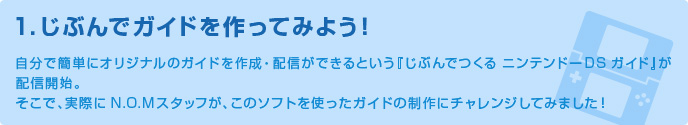
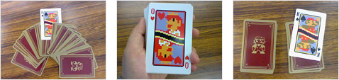
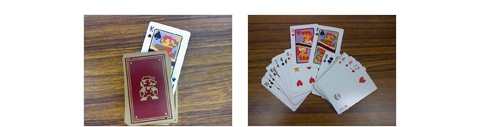

まずは、「ニンテンドーDSiショップ」から無料の『じぶんでつくる ニンテンドーＤＳ ガイド』をダウンロードしておき、あらかじめ『ニンテンドーDSi』のカメラを使って、ガイドに使いたい画像を撮影しましょう。
今回は、トランプを使ったちょっとした手品のタネ明かしを、ガイドにしてみましょう。写真の撮影の際には、手品のタネをわざと丸見えにして、わかりやすさを重視してみました。


あらかじめ、あとから加える音声による説明を文章で作成しておいたり、ガイドの手順を考えたりしておくと、必要な写真の枚数もわかってスムーズに作業を行うことができます！
『じぶんでつくる ニンテンドーＤＳ ガイド』を起動し、「メインメニュー」で「編集モード」を選びます。「カンタン」編集モードの選択画面で「データ編集」をタッチすれば、編集作業のスタートです！
ガイドの順番を考えながら、撮影した写真を番号の上へスライドしていきます。順番を間違えても、ゴミ箱にスライドすればOK。もちろん元の写真が消えることはありません。
つぎに「音声」タブで、「REC」をタッチすれば、ガイド音声の録音画面になります。「カンタン」編集モードでは、1つのデータにつき最大30秒まで録音することができます。
ガイドなので、音声を録音する際には、ハッキリとわかりやすい発声を意識してみました。また、ゆっくりしゃべるようにすると、より聞き取りやすくなるでしょう。失敗しても、なんどでもすぐに録りなおせるので大丈夫です。
録音した音声データを、「写真タブ」のときと同じように、番号にスライドして順番に登録していきます。
「カンタン」編集モードのトップ画面で「プレビュー」をタッチすれば、作っている途中のガイドを実際に再生して確認することができます。ここまで来れば、完成まではあとひと息です！
今回の手品は簡単なものなので、手順の数も短くしましたが、もっと複雑なものをガイドする場合には、同じ手順を別の角度から撮った写真を間にはさんだりすると、よりわかりやすくなるでしょう！
最後にもう一度通してプレビューしてみて問題がなければ、いよいよ配信です！
ガイドを作成したものとは別のDSiを用意して、『じぶんでつくる ニンテンドーＤＳ ガイド』をインストールし、“再生ソフト配信用”にします。
ガイドの入っていない方のDSiで「再生ソフト配信」を選択し、ガイドの入っているDSiで「データ配信」を選択しましょう。
配信中のDSiの近くで、受信用のDSを起動して「DSダウンロードプレイ」を選択します。『ニンテンドーＤＳ ガイド』の受信は、すべてのニンテンドーDSシリーズで利用できます。
作成したガイドを別のDSで受信して、ガイドを再生することができました！ あなたの考えたマジックのタネあかしも、この方法で披露してみませんか？
『じぶんでつくる ニンテンドーＤＳ ガイド』は、何のガイドを作成するか、どんな時にどんな場所で利用するかなど、使い方次第で可能性は無限大です。お友だちの誕生日にみんなの写真と音声でよせがきスライドショーを作ったり、学校の文化祭などの催し物で、自分が作ったオリジナルのガイドを見せたりして 、みんなを驚かせちゃいましょう！
また、配信を行わなくても、写真に音声メモをつけた、自分用のアルバムとしても利用できます。まずはダウンロードして実際に使ってみて、どんな使い方ができるか、みなさんもぜひ考えて＆作ってみてください！
｜ 前のページへ ｜ トップへもどる ｜ 次のページへ ｜